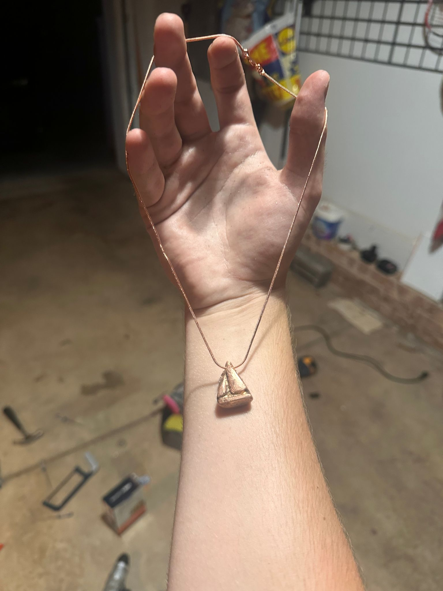
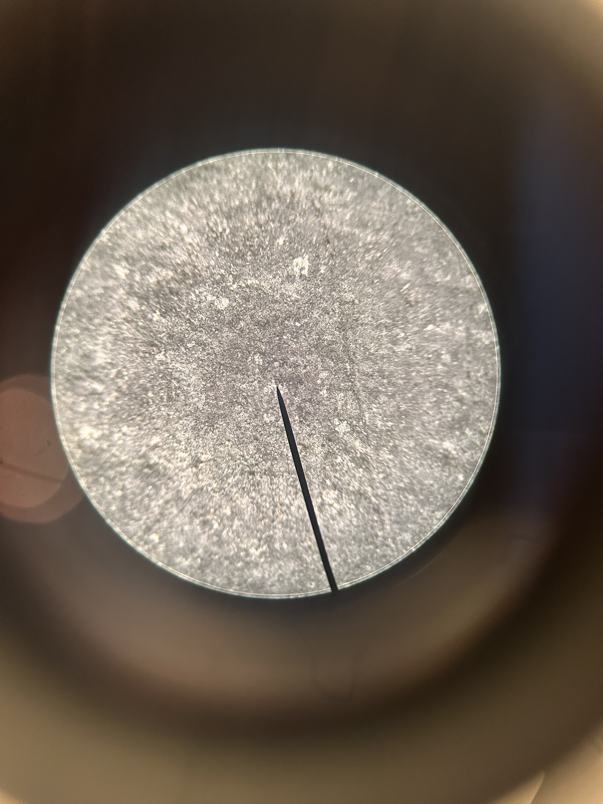
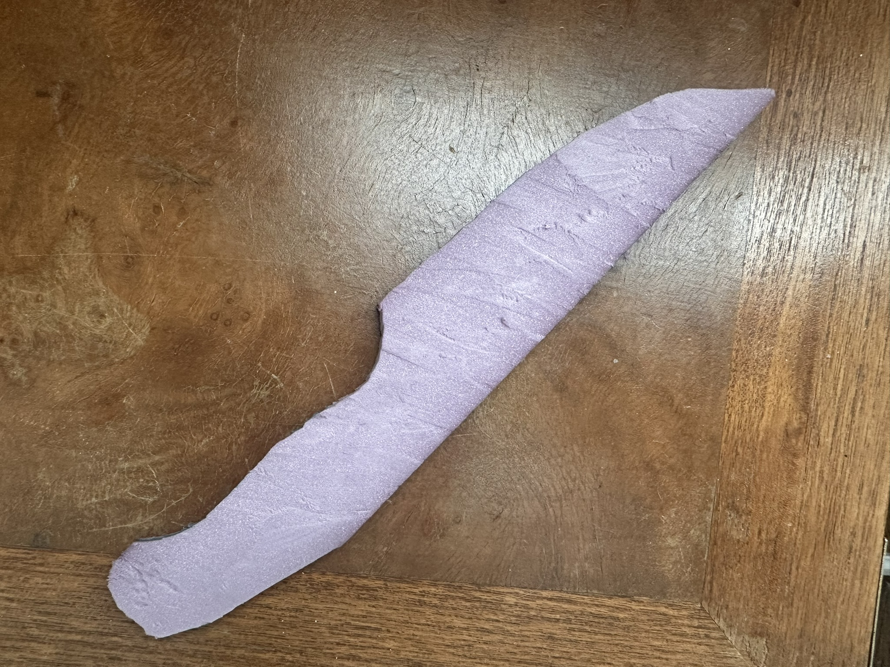

The foundry
Metal, from
the inside out.
I’m interested in what a material is made of, how it behaves, and what I can make with it.
Copper’s face-centered cubic lattice has atoms at each corner and the center of every face.
Drag to rotate
From structure to casting
A small foundry.
A lot to try.
Casting lets me turn an interest in materials science into something I can hold.
I’ve led a team of friends in making useful and artistic castings from recycled metals and alloys, including ZA-27, spinodal bronze, and manganese bronze.

Alloy experimentation
Small changes.
Different behavior.
I use CALPHAD to explore the phases in different alloy compositions. Copper and aluminum are a good example: an aluminum bronze can be strong and ductile, while adding much more aluminum can produce brittle intermetallic compounds.
I’ve made intermetallic samples hard enough to scratch glass but brittle enough to break by hand. It’s a useful reminder that hardness and toughness are different properties.

Useful castings
From Scrap to Tool.
One project was a nickel-aluminum bronze knife casting. I’m interested in how alloy choice and the casting process change what I can make, from experimental hardware to a finished object.
Working with alloys such as ZA-27 and aluminum bronze gives options to match the required material performance and price.

Cast jewelry
Working at a smaller scale.
I’ve used sand casting, lost-foam casting, and investment techniques to make jewelry. Projects include a copper pendant, a ZA-27 zinc alloy ring, and a cubic zirconia set into pure zinc.
These smaller objects give me another way to try casting methods and work with different materials.

Looking closer
Under the microscope.
The finished shape is only part of what interests me. Looking more closely at a sample gives me another way to think about the material behind the object.
This is a microscope image of cast zinc. It has a clean surface because zinc doesn't form thick scale when cast, unlike copper
Casting Methods
